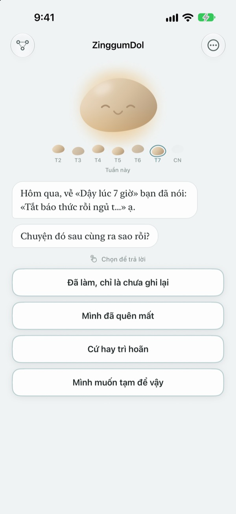
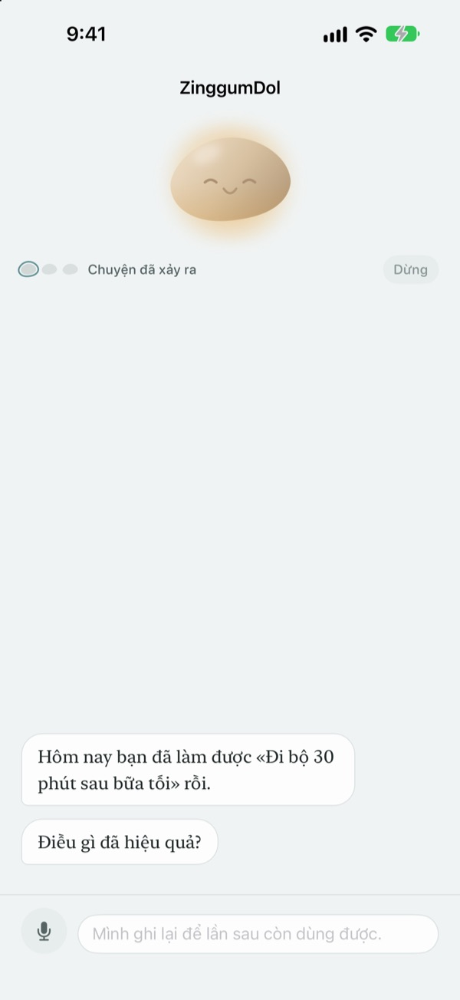
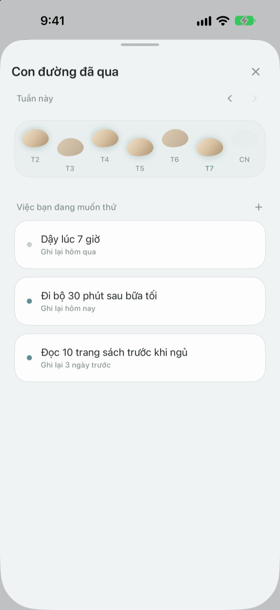
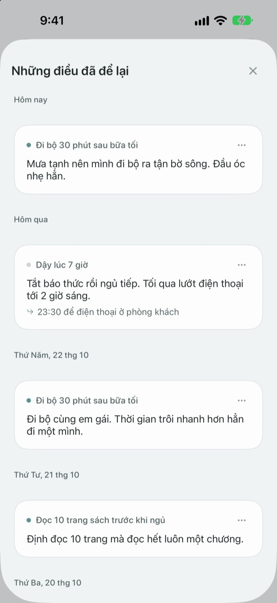

Hụt chân một bước
không có nghĩa là rơi xuống suối
Ngày bạn lỡ mục tiêu, viên đá sẽ là người mở lời trước. Nó hỏi chuyện gì đã xảy ra chứ không hỏi bạn sai ở đâu, rồi trả lại cho bạn sự việc và cảm xúc tách riêng.
Trò chuyện, ghi chép và con đường đã qua đều miễn phí. Không đăng ký, không quảng cáo.

Trò chuyện với viên đá
Hôm nay bạn định đi bộ buổi tối mà không đi được. Chạm vào một câu trả lời hoặc tự viết, viên đá sẽ đáp lại y như trong ứng dụng.
Những ngày không theo kế hoạch, bạn có đang tự trách mình?
Buổi tối bỏ buổi tập, ý nghĩ đầu tiên thường là "sao mình cứ thế này". Nhưng nhìn kỹ lại thì hôm đó phải tăng ca, trời mưa, và bạn đã kiệt sức. ZinggumDol hỏi riêng chuyện gì đã xảy ra và bạn đang thấy thế nào, rồi đặt hai điều cạnh nhau. Khi thấy là do hoàn cảnh chứ không phải do ý chí, bước nhỏ tiếp theo sẽ dễ tìm hơn.
Viên đá mở lời trước
Đặt một mục tiêu, viên đá sẽ cùng bạn dõi theo những ngày làm được và những ngày vướng lại. Ngày bị lỡ, nó hỏi "đã có chuyện gì?" chứ không hỏi "sao không làm?", và còn nhớ những gì bạn kể lần trước.
Ngày nào ngại viết, cứ nói ra thành lời. Giọng nói được nhận dạng ngay trên máy, bản ghi âm không bao giờ được lưu.

Con đường đã qua xếp thành những viên đá
Mỗi tuần trải ra thành một hàng đá bắc qua suối. Những ngày chưa bước lên, viên đá vẫn nằm đó; không gì bị xóa.
Dù có một hai chỗ trống, bạn vẫn thấy con đường tiếp tục.

Đọc lại những gì đã kể
Chuyện đã xảy ra, cảm xúc lúc đó và điều sẽ thử lần sau được xếp theo ngày. Đọc lại một ngày vướng lại giống vậy, bạn sẽ thấy điều gì đã có ích.
Tiện ích trên Màn hình chính hiện một câu của viên đá, và lời nhắc vào giờ bạn chọn mời bạn nhìn lại ngày hôm nay.

Bắt đầu chỉ với ba bước
- 1
Viết một mục tiêu
Chẳng hạn "Đi bộ 30 phút sau bữa tối".
- 2
Mở ứng dụng lúc cuối ngày
Viên đá sẽ hỏi hôm nay của bạn thế nào. Đặt lời nhắc để không quên.
- 3
Chạm chọn hoặc viết câu trả lời
Bạn có thể dừng bất cứ lúc nào với
Mình muốn tạm để vậy.
Cuộc trò chuyện diễn ra thế này
- Chuyện đã xảy ra
- Chỉ hỏi sự việc: điều gì đã cản trở
- Cảm xúc
- Chọn cảm xúc lúc này trên thang năm mức
- Nhìn lại
- Viên đá trả lại sự việc và cảm xúc của bạn tách riêng
- Bước tiếp theo
- Bạn tự chọn một việc nhỏ, năm phút là đủ
- Tổng kết
- Ngày lòng nặng trĩu, nó không hỏi thêm mà rủ bạn nghỉ ngơi
Bạn có thể dừng ở bất kỳ bước nào, những gì đã nói vẫn được giữ lại.
Trò chuyện và ghi chép miễn phí. Cần nhiều hơn thì có Pro.
Miễn phí
- Mọi cuộc trò chuyện với viên đá
- Tối đa ba mục tiêu
- Nói thay vì gõ
- Con đường đã qua và mọi điều đã viết
- Tiện ích Màn hình chính và nhắc nhở hằng ngày
- Khóa bằng mật mã
ZinggumDol Pro
- Không giới hạn số mục tiêu
- Chọn từ sáu bề mặt viên đá
- Xuất ghi chép ra tệp văn bản
Mua một lần, dùng mãi. Không phải gói đăng ký.
Màn hình thanh toán không bao giờ chen vào giữa cuộc trò chuyện. Trên thiết bị mới hoặc sau khi cài lại, hãy chạm vào Khôi phục giao dịch mua trong Cài đặt.
Câu hỏi thường gặp
Ngày bị lỡ có nhất thiết phải viết lý do không?
Không. Chạm Mình muốn tạm để vậy ở bất kỳ bước nào, cuộc trò chuyện kết thúc ngay. Những gì đã nói vẫn được giữ để lần sau nói tiếp.
Mình đã làm rồi mà ứng dụng bảo là chưa.
Chạm Đã làm nhưng chưa ghi lại. Viên đá vui vẻ nhận lời đính chính và hỏi xem điều gì đã giúp bạn. Cách hiệu quả sẽ được ghi lại và nhắc lại khi bạn vướng lần sau.
Những gì mình nói ra đi đâu?
Giọng nói được chuyển thành chữ ngay trên máy, bản ghi âm không bao giờ được lưu. Trên thiết bị được hỗ trợ, câu chữ còn được chỉnh lại cho dễ đọc, việc này cũng diễn ra trên máy.
Có thể đặt bao nhiêu mục tiêu?
Miễn phí ba mục tiêu. Xong mục tiêu nào thì Buông nó trong Con đường đã qua để có chỗ trống. Muốn nhiều hơn ba thì cần ZinggumDol Pro.
ZinggumDol Pro có phải gói đăng ký không?
Không. Trả một lần là của bạn. Trên thiết bị mới hoặc sau khi cài lại, hãy chạm Khôi phục giao dịch mua trong Cài đặt.
Người khác có đọc được nhật ký của mình không?
Không cần tài khoản. Ghi chép chỉ nằm trên thiết bị và iCloud của riêng bạn, và bạn có thể khóa ứng dụng bằng mật mã trong Cài đặt. Những gì bạn viết không bao giờ được gửi cho nhà phát triển. Thống kê sử dụng ẩn danh cũng tắt được trong Cài đặt.
Đổi giờ nhắc nhở thế nào?
Vào Nhắc nhở hằng ngày trong Cài đặt để bật, tắt và chọn giờ.
Viên đá có nhắc lại những điều mình đã làm được không?
Có. Nó nhớ điều gì đã giúp bạn, và vào ngày khó khăn sẽ nhắc bạn về một việc bạn vừa làm được gần đây.
Xóa toàn bộ thế nào?
Chạm Xóa mọi ghi chép trong Cài đặt. Mục tiêu và ghi chép sẽ biến mất vĩnh viễn, cả trên các thiết bị khác kết nối qua iCloud. Cài đặt và giao dịch mua vẫn giữ nguyên. Có Pro thì bạn có thể lưu một bản trước bằng Xuất ghi chép.
Liên hệ thế nào?
Qua "Gửi phản hồi" trong Cài đặt của ứng dụng, hoặc gửi email tới địa chỉ bên dưới.
Có câu hỏi hay góp ý? Viết cho leeo@kakao.com.